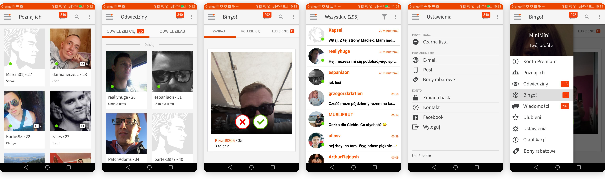
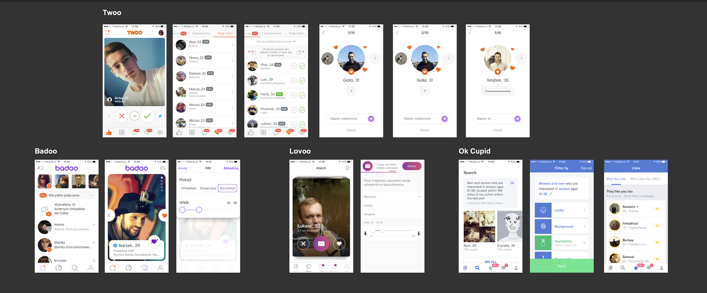
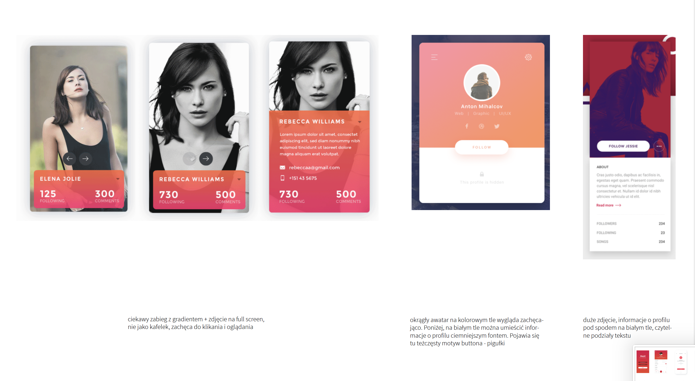
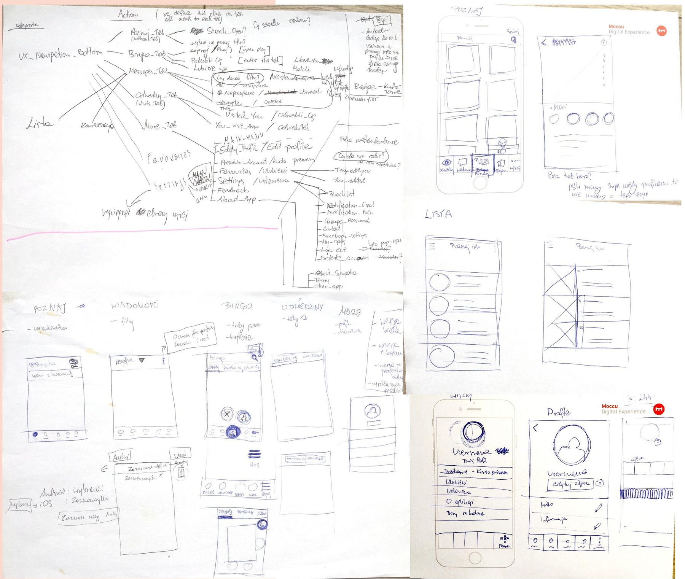
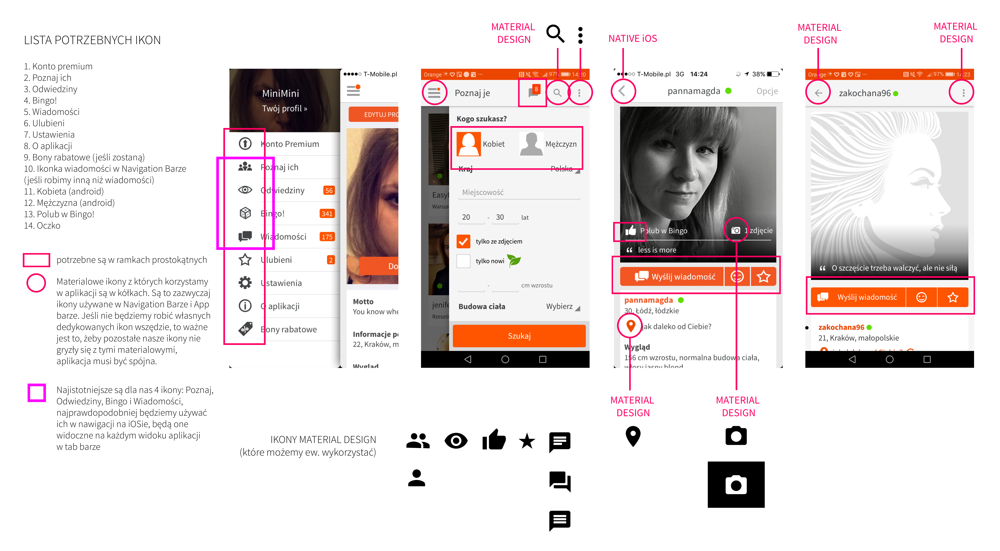
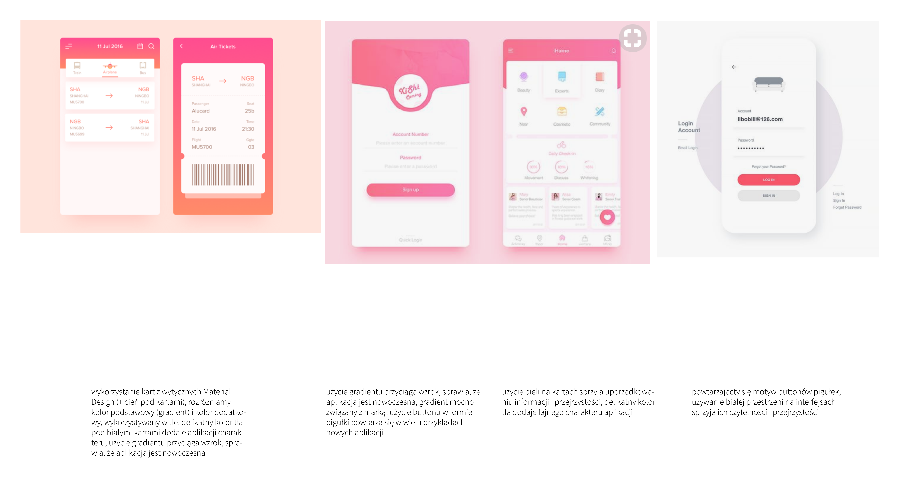
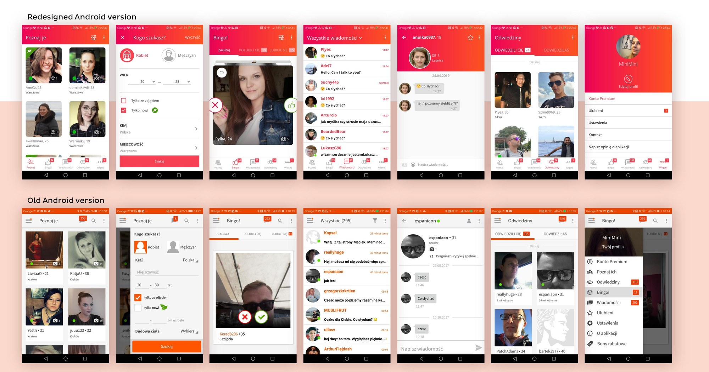

A full navigation and visual overhaul for Sympatia, rolled out incrementally across the app.
Sympatia is the biggest dating service in Poland, available as a website, mobile web, and native apps for Android and iOS, with millions of registered users. In my role as UX/UI Designer at Ringier Axel Springer Polska, one of the challenges I had was fully redesigning the whole Sympatia mobile application, a complex, multi-module system serving a wide range of user accounts.
The goal was to give Sympatia users a genuinely user-friendly mobile experience and build something that could actually compete with newer dating apps on the market. That meant bringing the app in line with current mobile standards and iOS/Android guidelines, giving it a fresh look consistent with Sympatia's recent rebrand, and, what's important from a technical perspective, reducing technical debt and shipping a faster, higher-quality product.

The existing app before the redesign: a side drawer navigation and a visual style that hadn't kept pace with the market.
I started the redesign with market research and a competitor analysis, along with a review of current mobile guidelines and trends. That work made it clear our navigation pattern was behind current standards, so I proposed moving to a bottom navigation instead, since it felt more native than the existing side drawer, especially on iOS.


Benchmarking the dating app competition, alongside the visual style references and UI analysis I put together for the new look and feel.
I developed the new information architecture and sketched several early versions of the new navigation. Working closely with a cross-functional team of developers, our Product Owner, and Business Owners, I presented the research findings alongside the design concepts, and we aligned on adopting the new navigation on both platforms as the strategic first step of the redesign.

Early sketches mapping the new information architecture and navigation.
Alongside the structural work, I collaborated closely with our graphic designer on the visual direction. I put together a moodboard and prepared recommendations to make sure the whole team and business unit were aligned on where we were taking the look and feel.


Auditing the icons the new navigation would need, alongside analysis and pattern exploration for the refreshed visual direction.
Our strategy was to launch an MVP with the new navigation and refreshed visual style on the main screens, then follow an agile approach to roll out the remaining modules incrementally, with usability testing at each round, so we could keep iterating based on real user feedback, rather than designing everything upfront and shipping it all at once in one huge release, months later.
Beyond the navigation itself, I pushed for a broader visual refresh, aligning colors, icons, and typography with the refreshed branding, refining the motion design, and adding small, meaningful micro-interactions to make the experience feel more intuitive and consistent throughout.
The redesigned Android and iOS apps introduced the new bottom tabs navigation and a visual style consistent with Sympatia's rebrand, a clear step forward from the older, more cluttered and outdated version of the app.

The redesigned Android app (top) next to the previous version (bottom).
The MVP launched successfully and had a positive effect on user engagement and satisfaction. Because we rolled it out iteratively, we could keep adapting the product based on real user feedback, and we didn't have to wait long to see how people were reacting. Reviews after launch were positive, and the redesign delivered on our original goal: a refreshed app that could compete with newer dating products on the market, and a faster, lighter product overall.
super przejrzysta aplikacja, polecam znajomym, można poznać fajnych ludzi
Apka rozwija się w dobrym kierunku, widać że coś się dzieje i zmiany są na plus.
W porównaniu z innymi portalami, przyjazna, prosta i skuteczna.
Bardzo fajna aplikacja, prosta w obsłudze, dużo fajnych ludzi można poznać.
A few of the Play Store reviews after launch, translated: "super clear app," "developing in a good direction," "compares well to other apps, friendly, simple, and effective."